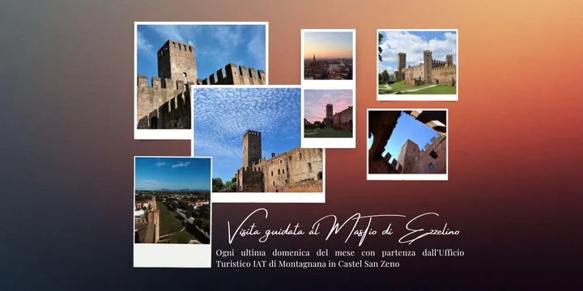

da dom 25 gen a dom 27 dic
Visita guidata al Mastio di Ezzelino
Il Mastio di Ezzelino fa parte del complesso museale di Castel San Zeno, ed è la torre di avvistamento più alta e antica del borgo murato di Montagnana, nonchè il cuore difensivo di tutto il castello.
 Indicazioni
Indicazioni
- Costi e prenotazioni
- Costo non indicato · Prenotazione non indicata
- Programma
- Programma da verificare. Apri la fonte ufficiale per orari e possibili aggiornamenti.
- In caso di maltempo
- Nessuna indicazione specifica pubblicata.
- Note
- Acquisito automaticamente dalla fonte.
L’EVENTO
Descrizione completa
Il Mastio di Ezzelino fa parte del complesso museale di Castel San Zeno, ed è la torre di avvistamento più alta e antica del borgo murato di Montagnana, nonchè il cuore difensivo di tutto il castello.
Generalmente vi si può salire in autonomia per ammirare la struttura interna e godere della veduta panoramica, ma ogni ultima domenica del mese un operatore museale sarà a disposizione dei visitatori per un tour speciale , che gradino dopo gradino metterà in luce la storia, le particolarità architettoniche appositamente studiate per la difesa militare, e tutte le curiosità dell'imponente torrione fatto erigere nel 1242 da Ezzelino III da Romano.
Al termine della visita guidata si raggiungerà il punto più alto di Montagnana ammirando la città murata, le campagne verdeggianti che la circondano, e i colli Euganei e Berici all'orizzonte, da quasi 40 metri d'altezza.
Si consiglia la prenotazione , dal momento che i posti a disposizione sono limitati.
IL PROGRAMMA
Programma e orari
Appuntamenti raccolti dalle fonti elencate. Dove manca un orario, non è ancora disponibile in questa scheda.
Programma pubblicato
- 2026-01-25 — 2026-01-25 · 14:00:00
- 2026-02-22 — 2026-02-22 · 14:00:00
- 2026-03-29 — 2026-03-29 · 15:00:00
- 2026-04-26 — 2026-04-26 · 15:00:00
- 2026-05-31 — 2026-05-31 · 15:00:00
- 2026-06-28 — 2026-06-28 · 15:00:00
- 2026-07-26 — 2026-07-26 · 15:00:00
- 2026-08-30 — 2026-08-30 · 15:00:00
- 2026-09-27 — 2026-09-27 · 15:00:00
- 2026-10-25 — 2026-10-25 · 14:00:00
- 2026-11-29 — 2026-11-29 · 14:00:00
- 2026-12-27 — 2026-12-27 · 14:00:00
INFORMAZIONI UTILI
Prima di partire
- Controllare la fonte prima di partire.
ORGANIZZAZIONE